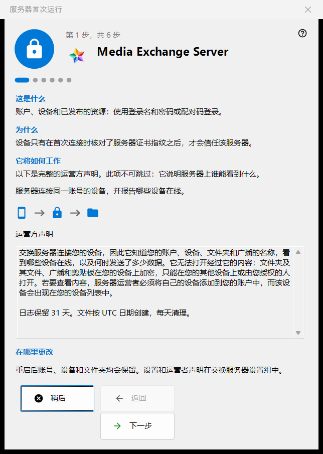
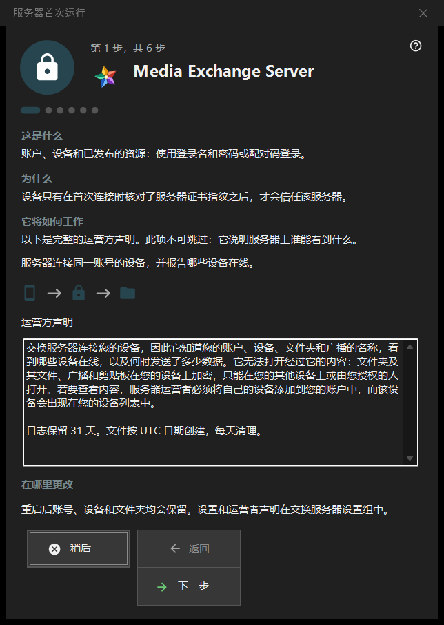

服务器首次运行
用途说明
Share Manager 中交换服务器设置组的首次运行向导。它说明这台电脑将变成什么，显示运营方声明，设置端口、客户端使用的地址和第一个账户，最后停在服务器状态上。只有在交换服务器存在并已启用时才会打开。


操作顺序
- 阅读第一页上的运营方声明。
- 查看端口和防火墙规则。
- 在尚无服务的服务器版本上，决定是否使用 Windows 服务。
- 填写客户端使用的地址。
- 创建第一个账户。
- 核对证书指纹，然后点击「完成」。
界面元素
页面和按钮
页脚显示「第 N 步，共 M 步」；「返回」「下一步」和「稍后」与任何向导中的用法相同，最后一页上的「完成」会打开管理器的交换服务器设置组。任何一页都可以不作更改直接跳过：此时服务器保持关闭，或保持原状。
运营方声明
关于谁能在服务器上看到什么的完整声明。不能跳过。服务器把同一个账户的设备连接起来，并报告其中哪些在线。
端口和防火墙
一个供设备会合的端口，以及一段供第三方客户端使用的端口范围。设备必须知道服务器端口，所以更改只对新代码生效。防火墙规则属于程序本身，因此更改端口不需要新规则。这些值保存在交换服务器设置组中。
Windows 服务
仅在尚不存在该服务的服务器版本上显示。服务可以让服务器在没人登录时仍然可用。复选框只记录您的同意：服务会在第一个账户创建之后注册，只出现一次权限提升提示，在此之前不会安装任何东西。交换设置组中的「注册为服务..」稍后可完成同样的操作。
客户端使用的地址
「客户端使用的地址（主机:端口）：」是其他设备用来访问这台电脑的地址。「建议本地地址」只在点击后才填入该栏。地址留空时，纯本地的首次启动仍然有效，但会对其他设备隐藏广播和文件夹连接。
第一个账户
第一台设备登录所用的账户。选择「自动生成密码」或「输入自己的密码」；「将此电脑连接到账号」会把这台电脑加入该账户。「下一步」会创建账户、启动服务器并检查证书。密码只在现有的对话框中显示一次，不会保存在这台电脑上。账户创建之后若出现失败，账户不会被删除。
服务器已就绪
最后一页指出地址、登录名和证书指纹记录在哪里，并提供「复制指纹」和「连接字符串和二维码..」。设备在首次连接时核对指纹之后，才会信任该服务器。「连接手机（帮助）」和「发布第一个文件夹（帮助）」两个链接会打开对应的帮助页面。